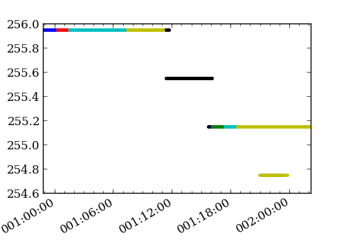
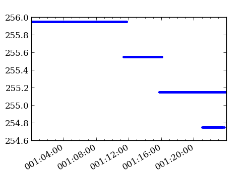

ACA L0 telemetry¶
The mica.archive.aca_l0 module provides tools to build and fetch from
a file archive of ACA L0 telemetry. This telemetry is stored in
directories by year and day-of-year, and ingested filenames are stored
in a lookup table.
Get_files()¶
Methods are provided to retrieve files and read those data files into data structures.
>>> from mica.archive import aca_l0
>>> obsid_files = aca_l0.get_files(obsid=5438)
>>> time_8x8 = aca_l0.get_files(start='2011:001', stop='2011:010',
... imgsize=[8])
>>> time_files = aca_l0.get_files(start='2012:001:00:00:00.000',
... stop='2012:002:00:00:00.000',
... slots=[0], imgsize=[6, 8])
The values from those files may be read and plotted directly:
>>> from astropy.io import fits >>> from Ska.Matplotlib import plot_cxctime >>> figure(figsize=(5, 3.5)) >>> for aca_file in time_files: ... f = fits.open(aca_file) ... plot_cxctime(f[1].data['TIME'], f[1].data['TEMPCCD'], '.') ...
Get_slot_data()¶
The loop/plot above will break if the images aren’t filtered on
“imgsize=[6, 8]”, as the ‘TEMPCCD’ columns is only available in 6x6
and 8x8 data. That’s one reason to use the convenience function
get_slot_data(), as it places the values in a
masked array (masking, for example, TEMPCCD when in 4x4 mode or when
the data is just not available).
>>> temp_ccd = aca_l0.get_slot_data('2012:001:00:00:00.000', ... '2012:002:00:00:00.000', ... slot=0, imgsize=[6, 8], ... columns=['TIME', 'TEMPCCD']) >>> figure(figsize=(5, 3.5)) >>> plot_cxctime(temp_ccd['TIME'], temp_ccd['TEMPCCD'], '.')
(it is still wise to filter on imgsize in this example, as there is no advantage to reading each of the 4x4 files.)
The get_slot_data() method will retrieve
all columns by default and the resulting data structure, as mentioned,
will have masked columns where those values are not available
(i.e. HD3TLM64 in 6x6 or 4x4 image data). See ACA L0 MSIDs/columns
for the list of available columns.
The aca_l0 archive includes all of the raw image data. The following code grabs the image data from slot 2 during a fid shift and creates a plot of each readout.
>>> from scipy.stats import scoreatpercentile
>>> from itertools import izip, count
>>> slot_data = aca_l0.get_slot_data(98585849, 98585884, slot=2)
>>> vmax = scoreatpercentile(np.ravel(slot_data['IMGRAW']), 98)
>>> vmin = scoreatpercentile(np.ravel(slot_data['IMGRAW']), 2)
>>> norm = mpl.colors.LogNorm(vmin=vmin, vmax=vmax, clip=1)
>>> for raw, idx in izip(slot_data['IMGRAW'], count()):
... fig = figure(figsize=(4,4))
... imshow(raw.reshape(8,8, order='F'),
... interpolation='none',
... cmap=cm.gray,
... origin='lower',
... norm=norm,
... aspect='equal')
... savefig("slot_2_{0:02d}.png".format(idx))
ImageMagick can be used to knit those plots together into an animated gif:
convert -delay 20 -loop 0 slot*.png slot_2.gif
Get_l0_images()¶
An alternate way to access ACA L0 image is via the
get_l0_images() function. This returns a Python list of
ACAImage objects (see the chandra_aca.aca_image docs for details). Each of these
objects contains the image along with relevant meta-data for each readout:: ['TIME',
'IMGROW0', 'IMGCOL0', 'BGDAVG', 'IMGSTAT', 'IMGFUNC1', 'IMGSIZE', 'INTEG'].
For example:
>>> imgs = aca_l0.get_l0_images(98585849, 98585884, slot=2)
>>> imgs[0] # ACAImage rounds the values for viewing
<ACAImage row0=-246 col0=116
array([[ 32, 81, 81, 212, 262, 98, 32, 27],
[ 21, 48, 305, 1170, 830, 169, 65, 38],
[ 38, 87, 825, 3434, 2635, 393, 147, 59],
[ 54, 114, 508, 3614, 5408, 1284, 398, 92],
[ 76, 163, 448, 2548, 5534, 1547, 344, 202],
[ 65, 103, 256, 809, 2602, 1656, 426, 114],
[ 16, 38, 54, 327, 1416, 1574, 502, 114],
[ 10, 16, 43, 103, 371, 1191, 491, 92]])>
>>> imgs[0].aca[-240, 118] # Access row=-240, col=118
53.90625
>>> imgs[0].meta
{'BGDAVG': 25,
'IMGCOL0': 116,
'IMGFUNC1': 1,
'IMGROW0': -246,
'IMGSIZE': 8,
'IMGSTAT': 0,
'INTEG': 1.696,
'TIME': 98585849.940383524}
>>> imgs[0].TIME
98585849.940383524
>>> imgs[0].row0, imgs[0].col0 # shortcut: row0 => IMGROW0
(-246, 116)
ACA L0 MSIDs/columns¶
msid |
description |
units |
|---|---|---|
TIME |
Time-tag of the data record |
s |
QUALITY |
Data quality flag; 0 - good, 1 - bad |
|
MJF |
Major frame ctr value |
|
MNF |
Minor frame ctr value |
|
END_INTEG_TIME |
end integration time |
s |
INTEG |
integration time |
s |
GLBSTAT |
global status |
|
COMMCNT |
command count |
|
COMMPROG |
command progress |
|
IMGFID1 |
image type |
|
IMGNUM1 |
image number (of 8) |
|
IMGFUNC1 |
image function |
|
IMGSTAT |
image status |
|
IMGROW0 |
row of lowerleft image pixel |
|
IMGCOL0 |
col of lowerleft image pixel |
|
IMGSCALE |
pixel scaling factor |
|
BGDAVG |
average background |
DN |
IMGFID2 |
image type |
|
IMGNUM2 |
image number (of 8) |
|
IMGFUNC2 |
image function |
|
BGDRMS |
background RMS |
DN |
TEMPCCD |
temp 1 - CCD |
K |
TEMPHOUS |
temp 2 - AC housing |
K |
TEMPPRIM |
temp 3 - lens cell |
K |
TEMPSEC |
temp 4 - secondary mirror |
K |
BGDSTAT |
bgd pixel status |
|
IMGFID3 |
image type |
|
IMGNUM3 |
image number (of 8) |
|
IMGFUNC3 |
image function |
|
IMGFID4 |
image type |
|
IMGNUM4 |
image number (of 8) |
|
IMGFUNC4 |
image function |
|
IMGRAW |
aspect camera image |
DN |
HD3TLM62 |
Hdr 3 tlm. imgtype=6 word=2 |
|
HD3TLM63 |
Hdr 3 tlm. imgtype=6 word=3 |
|
HD3TLM64 |
Hdr 3 tlm. imgtype=6 word=4 |
|
HD3TLM65 |
Hdr 3 tlm. imgtype=6 word=5 |
|
HD3TLM66 |
Hdr 3 tlm. imgtype=6 word=6 |
|
HD3TLM67 |
Hdr 3 tlm. imgtype=6 word=7 |
|
HD3TLM72 |
Hdr 3 tlm. imgtype=7 word=2 |
|
HD3TLM73 |
Hdr 3 tlm. imgtype=7 word=3 |
|
HD3TLM74 |
Hdr 3 tlm. imgtype=7 word=4 |
|
HD3TLM75 |
Hdr 3 tlm. imgtype=7 word=5 |
|
HD3TLM76 |
Hdr 3 tlm. imgtype=7 word=6 |
|
HD3TLM77 |
Hdr 3 tlm. imgtype=7 word=7 |
|
IMGSIZE |
derived param (4 6 or 8) |
|
FILENAME |
derived param; source filename |